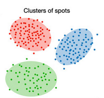

Tutorials# Note We provide explanatory notebooks for FuseMap’s spatial integration and mapping functionalities.  Spatial integration across technologies Spatial integration across organs Spatial imputation Spatial mapping to mouse brain atlas Spatial mapping to mouse/human organs